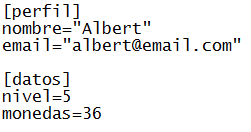
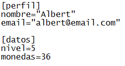

Lee un número real del archivo ini abierto actualmente.
Sintaxis
ini_read_real(section, key, def);
Argumentos
| Argumento | Descripción |
|---|---|
| section | La sección del archivo ini del cual obtener el valor. |
| key | La llave que contiene el valor. |
| def | El valor por defecto que se devolverá en caso de producirse algún error. |
Descripción
Un archivo ini se compone de secciones, y dentro de cada una de ellas se encuentran parejas llave=valor. Un ejemplo de la estructura de un archivo ini es el siguiente:

Donde las secciones se encuentran encerradas en corchetes ([ y ]), y cada llave posee en frente suyo su respectivo valor.
Esta función permite obtener un número real almacenado dentro de la sección y la llave dados. En caso de que el archivo abierto, la sección o la llave dados no existan, se devolverá el valor por defecto establecido.

Donde las secciones se encuentran encerradas en corchetes ([ y ]), y cada llave posee en frente suyo su respectivo valor.
Esta función permite obtener un número real almacenado dentro de la sección y la llave dados. En caso de que el archivo abierto, la sección o la llave dados no existan, se devolverá el valor por defecto establecido.
Devuelve
Número real.
Ejemplo
ini_open("datos.ini");
monedas = ini_read_real("datos", "monedas", 0);
nivel = ini_read_real("datos", "nivel", 1);
ini_close();Se abre un archivo ini, se leen algunos valores reales del archivo y posteriormente se cierra.